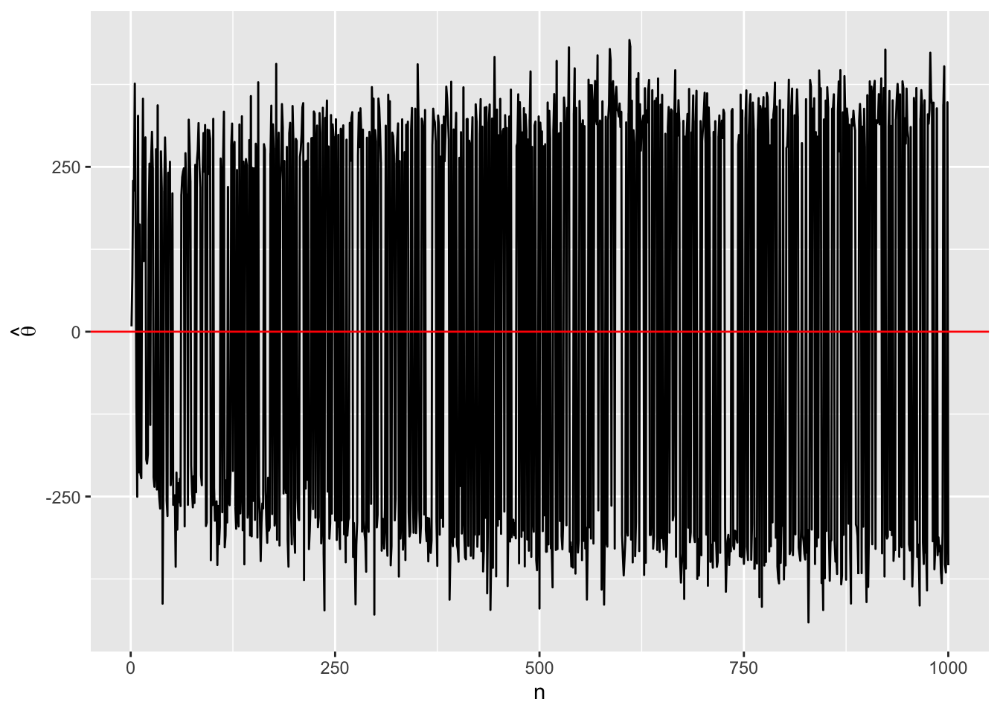

set.seed(19861009) # 乱数のseedを指定
X1 <- rnorm(5, 0, 100) # N(0, 100)から乱数を5個抽出する
print(X1) # 抽出された乱数を出力する[1] -195.662813 153.088455 25.989905 -3.071453 -53.218536mean(X1) # 抽出された乱数の平均値を出力する[1] -14.57489May 24, 2022
ここでは統計学を勉強する上でよく混同される一致性と不偏性について解説します。
一致性はサンプルサイズが大きくなると、推定値が母数へ収束することを意味します。たとえば、\(\mu = 0\)、\(\sigma = 100\)の正規分布から独立的に抽出された\(n\)個の確率変数\(X\)があるとします。つまり、以下のような状況を考えます。
\[ X_1, X_2, X_3, ..., X_n \overset{\text{iid}}{\sim} N(0, 100). \]
ただし、ここでは\(\mu = 0\)、\(\sigma = 100\)を仮定しましたが、実際において私たちは\(\mu\)と\(\sigma\)の値は分かりません。たとえば、手元に男女100人の身長データがあっても、日本人全体の身長の平均値と分散は分かりません。したがって、私たちは手元にあるこの\(X\)のみを用いて、未知である母集団の特徴を推論する必要があります。手元の\(X\)から母集団における平均値（\(\mu\)）を推定する際によく使われるが平均値（\(\bar{X}\)）です。
たとえば、\(n = 5\)の場合を考えてみましょう。
set.seed(19861009) # 乱数のseedを指定
X1 <- rnorm(5, 0, 100) # N(0, 100)から乱数を5個抽出する
print(X1) # 抽出された乱数を出力する[1] -195.662813 153.088455 25.989905 -3.071453 -53.218536[1] -14.57489\(n = 5\)の場合、\(\bar{X}\)は-14.5748884です。それでは\(n = 100\)ならどうでしょうか。
[1] -12.513448 16.473814 -55.827125 -86.033925 196.563039 -59.660676
[7] 178.879309 -95.615549 -117.455299 53.094037 80.033960 -47.082599
[13] -102.146620 89.866926 -7.909525 -31.347797 30.952894 107.081687
[19] -195.426684 -71.759205 48.629528 116.743532 51.594264 -211.544831
[25] 160.766456 308.931296 36.696450 78.402401 13.495426 -19.456266
[31] -120.529780 6.163411 -24.332314 138.872863 -30.410003 39.268512
[37] -124.424084 59.200185 54.027469 72.515763 -178.219784 -179.507844
[43] 47.350023 -52.366831 98.083261 -44.570705 217.776695 62.598027
[49] -90.665200 103.918722 -142.114845 58.524963 -33.849776 75.790091
[55] -89.727866 5.718650 -14.870296 -42.457583 -39.518473 49.421506
[61] 17.351046 -39.949024 -62.180725 -21.830242 42.782942 35.902584
[67] -28.100441 -86.049005 37.312739 -43.398827 -288.436043 40.767558
[73] 18.953100 -4.163539 59.720674 97.730085 48.131342 -83.222430
[79] 71.003268 181.770553 82.021292 -59.789360 61.338302 -154.959971
[85] -173.761830 -177.086379 147.810801 -58.044487 140.592706 32.867267
[91] 60.883589 -50.408130 -124.858910 32.480463 -104.253371 -26.842073
[97] -76.278107 -92.971755 16.245089 -78.430475[1] -2.732595\(n = 100\)の場合の\(\bar{X}\)は-2.732595ですね。最後に、\(n = 10000\)ならどうでしょうか。このサンプルを出力するのはあまりにも結果が長くなるので、ここでは平均値だけを出力します。
\(n = 10000\)の場合の\(\bar{X}\)は-0.9447894ですね。このように\(n\)が大きくなると、\(\bar{X}\)は母集団の平均値（ここでは\(\mu = 0\)）へ近づきます。このようにサンプルサイズが大きくなると推定値が母数へ近づくことを「一致性 (consistency)」と呼びます。この例だと、「標本の平均値（\(\bar{X}\)）は母集団の平均値（\(\mu\)）の一致推定量である」と言えます。これは\(\bar{X} \overset{p}{\rightarrow} \mu\)と表記されます。より一般的に書くと推定値\(\hat{\theta}\)が母数\(\theta\)の一致推定量である場合、\(\hat{\theta} \overset{p}{\rightarrow} \theta\)と表記します。
この表記は大数の弱法則とも共通しますが、実際、一致性は大数の弱法則によって成り立ちます。
library(tidyverse)
X_bar_vec <- rep(NA, 1000) # 長さ1000の空ベクトルを作成
for (i in 1:1000) { # iを1から1000へ増やしながら反復
temp_vec <- rnorm(i, 0, 100) # N(0, 100)からi個の乱数を抽出し、temp_vecに格納
# temp_vecの平均値をX_bar_vecのi番目要素として格納
X_bar_vec[i] <- mean(temp_vec)
}
# 可視化
ggplot() +
geom_line(aes(x = 1:1000, y = X_bar_vec)) +
geom_hline(yintercept = 0, color = "red") +
labs(x = "n", y = expression(hat(theta)))\(n\)を大きくすることによって\(\bar{X}\)が\(\mu (=0)\)へ近づくことが分かります。この\(n\)を無限にすると (\(n \rightarrow \infty\))、\(\bar{X} = \mu\)になるでしょう。したがって、\(\bar{X}\)は\(\mu\)の一致推定量となります。
一致性と混同されやすい概念が「不偏性（unbiasedness）」です。これは推定値\(\hat{\theta}\)の期待値が母数\(\theta\)と一致することを意味します。数式で表すと\(\mathbb{E}[\hat{\theta}] = \theta\)であり、一致性と違って、サンプルサイズ（\(n\)）とは無関係な性質です。
たとえば、\(\mu = 0\)、\(\sigma = 100\)の正規分布から独立的に5個の値を抽出します（\(n = 5\)）。そして、この5個の値の平均値（\(\bar{X}\)）を計算します。この作業を1万回繰り返したいと思います。
df <- tibble(Trial = 1:10000,
X1 = rnorm(10000, 0, 100),
X2 = rnorm(10000, 0, 100),
X3 = rnorm(10000, 0, 100),
X4 = rnorm(10000, 0, 100),
X5 = rnorm(10000, 0, 100))
head(df)# A tibble: 6 × 6
Trial X1 X2 X3 X4 X5
<int> <dbl> <dbl> <dbl> <dbl> <dbl>
1 1 -91.6 -20.6 42.1 -28.8 -134.
2 2 -22.7 -204. 66.6 134. 66.2
3 3 -26.1 89.4 37.4 146. -108.
4 4 -27.9 -68.9 94.8 39.6 -50.7
5 5 48.4 -65.0 110. -23.1 -17.2
6 6 99.2 -29.2 -142. -9.03 39.9それでは\(X_1\)から\(X_5\)までの平均値を計算します。
# A tibble: 6 × 7
Trial X1 X2 X3 X4 X5 X_bar
<int> <dbl> <dbl> <dbl> <dbl> <dbl> <dbl>
1 1 -91.6 -20.6 42.1 -28.8 -134. -46.5
2 2 -22.7 -204. 66.6 134. 66.2 8.13
3 3 -26.1 89.4 37.4 146. -108. 27.9
4 4 -27.9 -68.9 94.8 39.6 -50.7 -2.62
5 5 48.4 -65.0 110. -23.1 -17.2 10.6
6 6 99.2 -29.2 -142. -9.03 39.9 -8.18この\(\bar{X}\)の平均値（\(\bar{\bar{X}}\)）、つまり\(\mathbb{E}[\bar{X}]\)はどうでしょうか。厳密には\(\mathbb{E}[\bar{X}]\)ではありませんが、試行回数が無限回となると\(\mathbb{E}[\bar{X}]\)となります。試行回数1万は十分多いと考えられるので、期待値に近い結果が得られると考えられます。
\(\mathbb{E}[\bar{X}]\)は0.0929181であり、ほぼ0であることが分かります。この0が母数（\(\mu\)）であり、\(\mathbb{E}[\bar{X}] = \mu\)の関係が成り立つことが分かります。したがって、\(\bar{X}\)は\(\mu\)の不偏推定量となります。
不偏推定量は複数存在することもあります。ここまで見てきました標本平均\(\bar{X}\)も\(\mu\)の不偏推定量の一つに過ぎません。たとえば、以下のような推定量を考えてみましょう。
\[ \begin{eqnarray} Y_1 & = X_3 \\ Y_2 & = \frac{1}{9}(X_1 + 2 \cdot X_2 + 3 \cdot X_3 + 2 \cdot X_4 + X+5). \end{eqnarray} \]
# A tibble: 6 × 9
Trial X1 X2 X3 X4 X5 X_bar Y1 Y2
<int> <dbl> <dbl> <dbl> <dbl> <dbl> <dbl> <dbl> <dbl>
1 1 -91.6 -20.6 42.1 -28.8 -134. -46.5 42.1 -22.0
2 2 -22.7 -204. 66.6 134. 66.2 8.13 66.6 11.6
3 3 -26.1 89.4 37.4 146. -108. 27.9 37.4 50.0
4 4 -27.9 -68.9 94.8 39.6 -50.7 -2.62 94.8 16.4
5 5 48.4 -65.0 110. -23.1 -17.2 10.6 110. 20.6
6 6 99.2 -29.2 -142. -9.03 39.9 -8.18 -142. -40.3それでは\(\mathbb{E}[Y_1]\)と\(\mathbb{E}[Y_2]\)を計算してみましょう。
それぞれ0.5527504と0.1050386の結果が得られており、こちらも\(\mu\)に非常に近いことが分かります。標本平均以外にも母平均の不偏推定量がいくらでもあり得ることが分かります。
しかし、なぜ\(\mu\)の不偏推定量として\(\bar{X}\)が使われているのでしょうか。それは\(\bar{X}\)が最も効率的な推定量であるからです。
不偏推定量の中で一つ選ぶとしたら「効率性（efficiency）」というものを基準とします。同じ不偏推定量であれば、精度の高い推定量、つまり分散が小さい推定量がいいでしょう。この精度の良さが「効率性」です。他にも、「有効性」と呼ばれる場合もあります。
効率性の最も良い推定量のことを有効推定量と呼びます。この効率性は簡単にいうと推定量の分散を意味します。これまで\(\mu\)の不偏推定量として\(\bar{X}\)、\(Y_1\)、\(Y_2\)を見てきました。これら3つの不偏推定量の効率性は\(V[\bar{X}]\)、\(V[Y_1]\)、\(V[Y_2]\)を用いて調べることが可能です。
それぞれの分散は2004.1535382、9974.5536133、2359.1813379であり、\(V[\bar{X}]\)が最も分散が小さい、つまり最も効率的な推定量であることが分かります。\(\bar{X}\)は一致推定量でありながら不偏推定量であり、そして最も効率的な\(\mu\)の推定量となります。
先ほどの標本平均は一致推定量でありながら、不偏推定量でした。しかし、世の中には一致推定量でありながら、不偏推定量ではない推定量が存在します。その代表的な例が標本分散（\(s^2\)）です。標本分散（\(s^2\)）は母集団における分散（\(\sigma^2\)）の一致推定量ですが、不偏推定量ではありません。
たとえば、\(\mu = 0\)、\(\sigma = 100\)の正規分布から独立的に1000万個の乱数を生成したとします。この場合、母分散（\(\sigma^2\)）は10000となります。そして、この1000万個の値の標本分散（\(s^2\)）と不偏分散（\(\hat{\sigma}^2\)）を計算します。ちなみに、Rのvar()は不偏分散を計算するため、標本分散を求めるためには不偏分散に\(\frac{n-1}{n}\)を掛ける必要があります。
[1] 9996.52[1] 9996.521どれも母分散に非常に近い値が得られており、\(n\)を無限にすると母分散に一致すると予想されます。したがって、\(s^2 \overset{p}{\rightarrow} \sigma^2\)、\(\hat{\sigma}^2 \overset{p}{\rightarrow} \sigma^2\)であり、どれも一致推定量であることが分かります。
df <- tibble(Trial = 1:10000,
X1 = rnorm(10000, 0, 100),
X2 = rnorm(10000, 0, 100),
X3 = rnorm(10000, 0, 100),
X4 = rnorm(10000, 0, 100),
X5 = rnorm(10000, 0, 100))
df <- df %>%
rowwise() %>% # 行単位の演算
mutate(S_2 = var(c(X1, X2, X3, X4, X5)) * (4/5), # 各試行における標本分散
Sigma_hat_2 = var(c(X1, X2, X3, X4, X5))) # 各試行における不偏分散
head(df)# A tibble: 6 × 8
# Rowwise:
Trial X1 X2 X3 X4 X5 S_2 Sigma_hat_2
<int> <dbl> <dbl> <dbl> <dbl> <dbl> <dbl> <dbl>
1 1 -59.1 29.6 44.2 -70.3 -14.7 2097. 2621.
2 2 149. 37.8 -25.9 -19.8 145. 5847. 7308.
3 3 47.6 158. -20.8 123. -219. 17846. 22307.
4 4 -175. -17.2 138. 12.2 -93.2 11005. 13756.
5 5 137. 173. 53.6 -33.2 29.7 5521. 6902.
6 6 118. 28.8 40.6 -15.6 76.7 2021. 2526.それでは\(s^2\)と\(\hat{\sigma}^2\)の平均値（\(\simeq\)期待値）を計算してみましょう。
標本分散の期待値は約8000で、母分散の\(\frac{n-1}{n}\)、つまり\(\frac{4}{5}\)となります。一方、不偏分散の場合期待値が母分散に非常に近いことが分かります。したがって、不偏分散は一致性と不偏性があり、標本分散は一致性のみあることが分かります。
逆に不偏推定量でありながら一致推定量ではない推定量も存在します。たとえば、以下のような例を考えてみましょう。
要するに、絶対値の最も高かった値を\(\theta\)の推定量（\(\hat{\theta}\)）として用いることを意味します。この場合、\(\hat{\theta}\)は一致推定量でしょうか。\(n\)を1から1000まで増やしながら確認してみましょう。
theta_hat_vec <- rep(NA, 1000) # 長さ1000の空ベクトルを作成
for (i in 1:1000) { # iを1から1000へ増やしながら反復
temp_vec <- rnorm(i, 0, 100) # N(0, 100)からi個の乱数を抽出し、temp_vecに格納
# temp_vecの中で最も絶対値の高い値はtheta_hat_vecのi番目要素として格納
theta_hat_vec[i] <- temp_vec[abs(temp_vec) == max(abs(temp_vec))]
}
# 可視化
ggplot() +
geom_line(aes(x = 1:1000, y = theta_hat_vec)) +
geom_hline(yintercept = 0, color = "red") +
labs(x = "n", y = expression(hat(theta)))
このように\(n\)をいくら増やしても\(\hat{\theta}\)は母数である0へ収束しないことが分かります。つまり、この推定量は一致推定量ではありません。それでは、この推定量は不偏推定量でしょうか。ここでは話を単純にするために\(n = 3\)の例を考えてみましょう。不偏性はサンプルサイズ（\(n\)）と無関係ですので、これでも問題ないでしょう。試行数は100万とします。
# シミュレーション用のデータを作成
df <- tibble(Trial = paste0("Trial", 1:1000000),
X1 = rnorm(1000000, 0, 100),
X2 = rnorm(1000000, 0, 100),
X3 = rnorm(1000000, 0, 100))
df <- df %>%
# X1, X2, X3の中で絶対値の最も高い値をTheta_Hatとする
mutate(Theta_Hat = case_when(abs(X1) > abs(X2) & abs(X2) > abs(X3) ~ X1,
abs(X2) > abs(X3) ~ X2,
TRUE ~ X3))
head(df) # dfの中身を確認する# A tibble: 6 × 5
Trial X1 X2 X3 Theta_Hat
<chr> <dbl> <dbl> <dbl> <dbl>
1 Trial1 48.6 73.3 -70.9 73.3
2 Trial2 -377. 152. -182. -182.
3 Trial3 105. -46.6 90.8 90.8
4 Trial4 52.5 -83.3 -66.8 -83.3
5 Trial5 -121. -56.9 83.9 83.9
6 Trial6 8.23 51.4 92.5 92.5非常に0に近い結果が得られており、これはほぼ\(\mu\)と同じ値となります。施行数が無限回になると、\(\mathbb{E}[\hat{\theta}]\)は\(\mu\)と一致していくだろうと考えられます。
我々が教科書でよく見る推定量は一般的に一致性と不偏性を同時に満たす推定量が多いでしょう。しかし、例外も常に存在します。標本分散もその一つの例です。他にも、最尤推定法から得られた分散の推定量は一致推定量ではあるものの、不偏推定量ではないことが知られています。